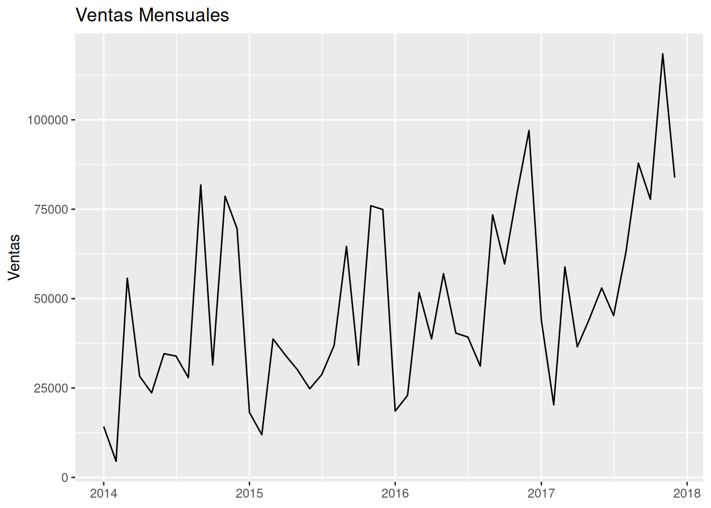
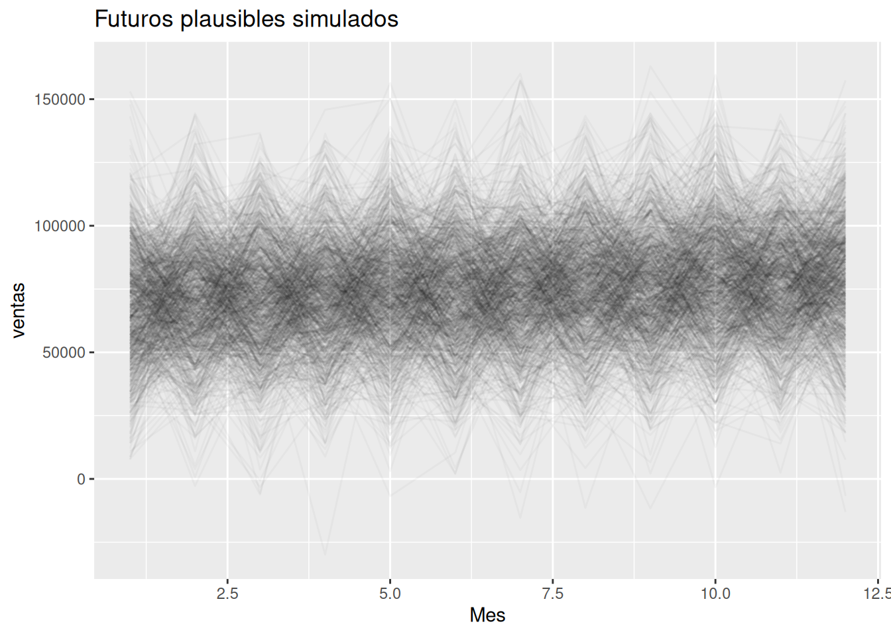
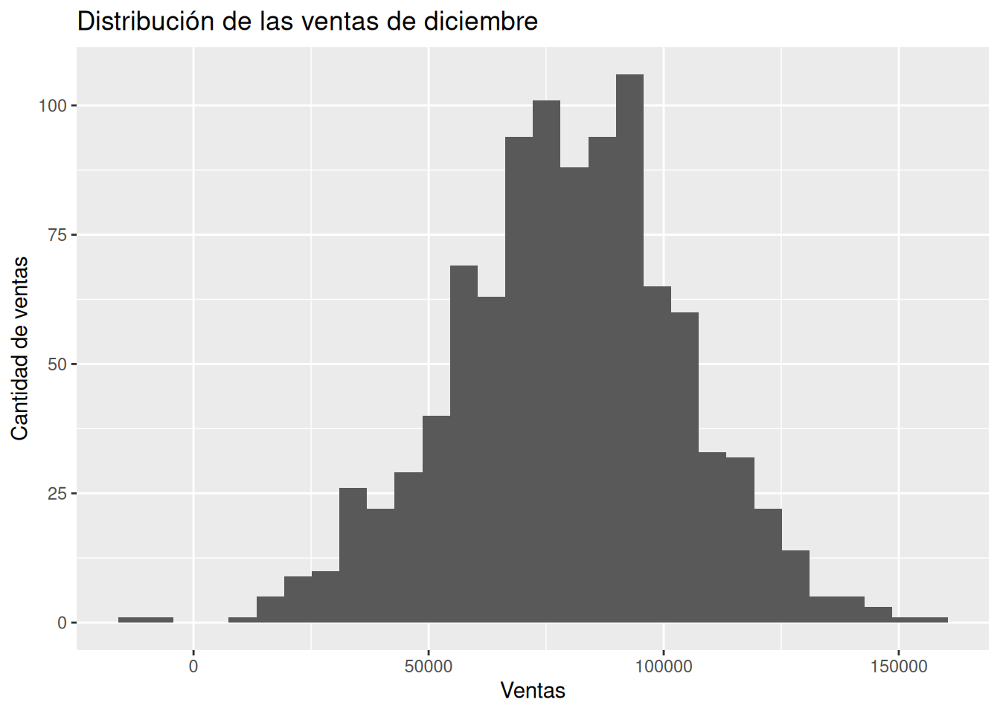

Hasta ahora hemos utilizado datos para comprender el pasado y construir modelos que nos permitan anticipar el futuro. Sin embargo, existe una idea importante que distingue a las organizaciones que simplemente reaccionan de aquellas que planifican con inteligencia:
el futuro no ocurre de una sola manera.
Cuando una empresa prepara su presupuesto para el próximo año, decide cuánto inventario comprar o cuántos empleados contratar, no conoce con certeza lo que ocurrirá.
Las ventas podrían crecer.
Las ventas podrían mantenerse estables.
Las ventas podrían disminuir.
Y, aun así, las decisiones deben tomarse.
Esta situación puede parecer incómoda, pero en realidad es completamente normal. La incertidumbre no es una señal de que algo esté mal. Es una característica inevitable del mundo real.
Las organizaciones exitosas no intentan eliminar la incertidumbre. Aprenden a convivir con ella.
Por esta razón, muchas decisiones empresariales importantes no se basan en una única predicción, sino en múltiples escenarios plausibles.
En este capítulo aprenderemos a construir y visualizar esos escenarios utilizando simulaciones sencillas y herramientas bayesianas que ya conocemos.
La idea central es simple:
El futuro no tiene un único camino posible. Existen múltiples futuros plausibles.
15.1 Planificar cuando el futuro es incierto
Imaginemos una pequeña empresa que vende artículos de oficina.
La dirección debe responder preguntas como:
¿Cuánto inventario debemos comprar?
¿Cuántos empleados necesitaremos?
¿Qué presupuesto debemos asignar?
¿Cuánto efectivo deberíamos mantener disponible?
Ninguna de estas decisiones puede esperar hasta conocer el futuro.
Todas deben tomarse hoy.
Y todas dependen de algo que todavía no ha ocurrido.
Esta situación no es exclusiva de las empresas.
Cuando una familia organiza unas vacaciones:
no conoce exactamente el clima;
no conoce exactamente el tráfico;
no conoce exactamente los gastos finales.
Sin embargo, puede prepararse para varios escenarios posibles.
Las organizaciones hacen exactamente lo mismo.
La planificación moderna consiste menos en adivinar el futuro y más en prepararse para diferentes posibilidades.
15.2 ¿Por qué pensar en escenarios?
Existe una diferencia importante entre estas dos afirmaciones:
Predicción única
Las ventas del próximo mes serán 15.000 dólares.
Escenario probabilístico
Las ventas del próximo mes podrían situarse entre 12.000 y 18.000 dólares, siendo 15.000 un valor representativo.
La segunda afirmación contiene mucha más información.
No solamente describe un resultado posible.
También comunica incertidumbre.
Y esa incertidumbre resulta extremadamente útil para la toma de decisiones.
Supongamos que una empresa compra inventario suficiente para vender exactamente 15.000 dólares.
Si las ventas terminan siendo 18.000 dólares:
podría quedarse sin existencias;
perder ventas;
perder clientes.
Si las ventas terminan siendo 12.000 dólares:
podría acumular inventario innecesario;
inmovilizar capital;
aumentar costos.
Por esta razón, los responsables de planificación suelen pensar en términos de:
escenario favorable;
escenario moderado;
escenario desfavorable.
No porque sepan cuál ocurrirá.
Sino porque desean estar preparados para cualquiera de ellos.
15.3 Simular futuros posibles
La simulación es una herramienta sorprendentemente intuitiva.
En esencia consiste en hacer una pregunta:
¿Qué podría ocurrir si repitiéramos el futuro muchas veces?
Obviamente no podemos repetir el futuro real.
Pero sí podemos pedirle al modelo que genere muchos futuros plausibles.
Podemos imaginarlo como una colección de mundos posibles.
En algunos mundos:
las ventas crecen rápidamente.
En otros:
las ventas permanecen estables.
En otros:
las ventas disminuyen.
Cada simulación representa una trayectoria posible.
Ninguna es una profecía.
Todas son posibilidades compatibles con la información disponible.
Esta idea es profundamente bayesiana.
Los modelos no producen una única respuesta.
Producen distribuciones de respuestas plausibles.
15.4 Preparación de los datos
Comenzaremos agregando las ventas por mes.
# Mostrar el tipo de la variable `Order Date`class(superstore$`Order Date`) # produce: character
[1] "character"
# Modificar el tipo de la variable de fecha de la orden de character# a date y crear la variable mes que cambia esta fecha a su versión # del primer día del mesventas_mensuales <- superstore %>%mutate(Order_Date =mdy(`Order Date`), # Pasar a tipo de dato fechames =floor_date(Order_Date, "month") # redondear la fecha hacia# atrás (inicio de mes) )# Mostrar 6 filas de las 9994 filas totalesventas_mensuales[1:6, -20:-1] # produce:
# Agrupar la tabla por ventas mesuales, resumir el total de ventas# mensual y ordenarlo en orden ascendenteventas_mensuales <- ventas_mensuales %>%group_by(mes) %>%summarise(ventas =sum(Sales),.groups ="drop" )# Imprimir 6 filas de las 48 filas que hay para 48 meses durante # 4 añosventas_mensuales[1:6,] # produce:
# Gráfico de las ventas mensualesggplot( ventas_mensuales,aes(x = mes,y = ventas ) ) +geom_line() +labs(title ="Ventas Mensuales",x =NULL,y ="Ventas" )

Interpretación
No buscamos identificar cada detalle de la serie.
Nos interesa observar:
tendencia general;
variabilidad;
fluctuaciones normales.
Estos patrones serán la base de nuestros escenarios futuros.
15.5 Un modelo sencillo para explorar el futuro
Creamos un índice temporal.
# agregar una variable tiempo que numere a cada observación o mesventas_mensuales <- ventas_mensuales %>%mutate(tiempo =row_number() )# Imprimir 6 filas de las 48, correspondientes a 48 mesesventas_mensuales[1:6,] # produce:
Interpretación: Es plausible que cada mes esté relacionado con un aumento de entre 548 y 1270 dólares en ventas.
Nuestro objetivo no es obtener el mejor pronóstico posible.
Queremos construir una herramienta sencilla para explorar incertidumbre futura.
15.6 Construyendo escenarios futuros
Creamos los próximos doce meses.
# Crear una tabla con la variable tiempo con 12 meses posteriores o# futuros a la tabla original de 48 mesesfuturo <-tibble(tiempo =max(ventas_mensuales$tiempo) +1:12 )futuro # produce:
# Basado en el modelo modelo_ventas, generar 1000 simulaciones (1000# filas) con los 12 meses futuros (12 columnas)simulaciones <-posterior_predict( modelo_ventas,newdata = futuro )# Generar 6 de las 1000 simulaciones (1000 filas) y 5 de los 12 # meses (12 columnas) simulaciones[1:6 ,1:5] # produce:
Aquí aparece una diferencia importante respecto a capítulos anteriores.
posterior_epred() genera valores medios esperados.
posterior_predict() genera observaciones futuras completas.
Por eso incorpora:
incertidumbre de los parámetros;
variabilidad natural de las ventas.
El resultado es mucho más realista cuando queremos explorar escenarios.
15.7 Visualizando múltiples futuros
Convertimos las simulaciones a formato largo.
# Cambiar todas las simulaciones a formato largoescenarios <-as_draws_matrix(simulaciones) %>%# transformar a matrizas_tibble() %>%# transformar a tibblemutate(sim =row_number() # numerar las filas ) %>%pivot_longer( # pasar a formato largo-sim, # No incluir sim en el cambio a formato largonames_to ="mes",values_to ="ventas" )# Producir una tabla que repite cada una de las 1000 simulaciones# (sim ) 12 veces y cada simulación tiene un valor de ventasescenarios[1:6,] # produce:
# Conocer el tipo de la variable mesclass(escenarios$mes) # produce: [1] "character"
[1] "character"
# Visualizar múltples escenarios de ventas por mesggplot( escenarios,aes(x =as.numeric(mes), # Cambiar el tipo de character a numericy = ventas,group = sim ) ) +geom_line(alpha =0.03) +labs(title ="Futuros plausibles simulados",x ="Mes" )

Interpretación
Este gráfico representa una de las ideas más importantes del libro.
No existe una única línea futura.
Existen muchas trayectorias compatibles con el modelo.
Cada línea representa un mundo posible.
15.8 Bandas predictivas
Resumimos las simulaciones.
# Agrupar las simulaciones por mes y resumir por percentil 5, 50 y# 95bandas <- escenarios %>%group_by(mes) %>%summarise(p5 =quantile(ventas, 0.05),p50 =median(ventas),p95 =quantile(ventas, 0.95),.groups ="drop" )# Mostrar 6 de los 12 meses (12 filas)bandas[1:6,] # produce:
# Escoger sólo las filas que en la variable mes tengan "12" en la# tabla de escenarios que se cambió a formato largoultimo_mes <- escenarios |>filter(#mes == "12" #max(mes) # produce "9"as.numeric(mes) ==# cambiar el tipo de la variable mes de max(as.numeric(mes)) # character a numeric )# Generar 6 de las 1000 simulaciones para el mes 12ultimo_mes[1:6,] # produce:
# Distribución de las ventas de los diciembres de las simulacionesggplot( ultimo_mes,aes(x = ventas )) +geom_histogram(bins =30 ) +labs(title ="Distribución de las ventas de diciembre",x ="Ventas",y ="Cantidad de ventas" )

Interpretación
Hasta ahora hemos hablado de:
tendencias;
trayectorias;
escenarios.
Aquí observamos algo diferente.
Una distribución completa de resultados futuros.
Este gráfico resume el mensaje principal del capítulo:
El futuro no es un número.
Es una distribución de posibilidades.
15.11 Planificación bajo incertidumbre
Inventario
Si la demanda resulta mayor de lo esperado:
podrían faltar productos.
Si resulta menor:
podría acumularse inventario.
Los escenarios ayudan a equilibrar ambos riesgos.
Presupuesto
Los ingresos futuros son inciertos.
Una planificación prudente considera:
escenarios optimistas;
escenarios moderados;
escenarios conservadores.
Operaciones
Las empresas deben prepararse para:
distintos niveles de actividad;
distintos niveles de demanda;
distintos niveles de utilización de recursos.
Las simulaciones permiten explorar estas posibilidades antes de que ocurran.
15.12 Escenarios extremos
Los escenarios centrales suelen recibir la mayor atención.
Sin embargo, algunas decisiones dependen de eventos poco frecuentes.
Por ejemplo:
una caída importante en ventas;
una demanda extraordinariamente alta;
interrupciones operativas.
Estos escenarios pueden ser poco probables.
Pero sus consecuencias pueden ser significativas.
Por ello conviene analizarlos explícitamente.
15.13 Interpretación probabilística
Cuando trabajamos con escenarios es importante evitar frases como:
❌
Esto ocurrirá.
O:
El próximo mes venderemos exactamente 15.000 dólares.
Es preferible utilizar expresiones como:
✅
Este resultado parece plausible según el modelo.
o
Este escenario es compatible con la información disponible.
El lenguaje probabilístico comunica incertidumbre de manera más honesta.
15.14 Humildad analítica
Las simulaciones no son el futuro.
Los modelos no conocen eventos inesperados.
No conocen:
crisis económicas;
cambios regulatorios;
nuevos competidores;
desastres naturales;
innovaciones tecnológicas.
Toda simulación es una simplificación.
Sin embargo, una simplificación útil.
Su valor no consiste en eliminar la incertidumbre.
Su valor consiste en ayudarnos a pensar mejor sobre ella.
Reflexión bayesiana
Durante mucho tiempo la analítica empresarial buscó producir predicciones cada vez más precisas.
El enfoque probabilístico propone una perspectiva diferente.
Tal vez el objetivo no sea adivinar exactamente qué ocurrirá.
Tal vez el objetivo sea comprender el rango de cosas que podrían ocurrir.
Una organización preparada para múltiples futuros plausibles suele tomar mejores decisiones que una organización preparada únicamente para el futuro que esperaba.
Ejercicios
Ejercicio 1
Observe las trayectorias simuladas.
¿Todas siguen exactamente el mismo camino?
¿Qué nos enseña esta variabilidad?
Ejercicio 2
Modifique el horizonte de proyección.
Pruebe:
1:6
y luego:
1:24
¿Cómo cambia la incertidumbre?
Ejercicio 3
Compare:
posterior_epred()
y
posterior_predict()
¿Cuál produce escenarios más dispersos?
¿Por qué?
Ejercicio 4
Construya escenarios:
percentil 10
percentil 50
percentil 90
Interprete cada uno desde la perspectiva de inventario.
Ejercicio 5
Suponga que usted es responsable de presupuesto.
¿Qué decisiones cambiarían si únicamente observara el escenario central?